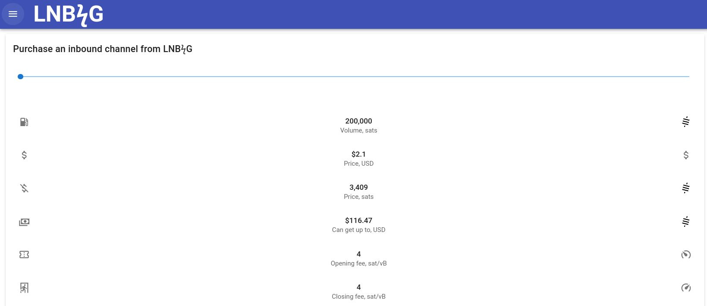

Lightning node with Umbrel
Setup your own Lightning node on a raspberry pi the easy way by leveraging Umbrel, a home server OS. This tutorial will also cover the setup of a mobile lightning wallet.
This tutorial assumes you have already set up a fully synchronized Bitcoin node with Umbrel OS with this tutorial.
Install LND
Installation
Go to the Umbrel app store and install the Lightning node application. This app is a GUI for the Lightning Network Daemon (LND), the most common Bitcoin Lightning implementation. Launch the application and leave all settings at default.
Node's wallet
You will get prompted to link a wallet to the node. You can use an existing wallet or create a new one.
The Lightning Node needs a Bitcoin wallet to manage funds and open channels.
If you create a new one, make sure to safely backup your seed.
Create a Lightning wallet
On your phone, install the following apps:
- BlueWallet: An open source mobile wallet that connects to your Lightning node
- Orbot: Used to connect to Tor (for BlueWallet to reach your node)
On the Umbrel App Store, download the BlueWallet Lightning application. Open the application and at the top right, notice the LNDHub QR code.
Now back to your phone:
- Start Orbot, wait to be successfully connected to Tor
- Open BlueWallet, click on the 3 dots at the top right
- Got to
Network > Lightning Settings - Scan the
LNDHub QR codeand save the changes
You can now create as many Lightning wallets as you'd like from your phone.
- Back on the BlueWallet home screen, click the "+" in the top right.
- To create a new wallet, select the
Lightningoption - You should see your Node URI pre-completed
- Click
Createand you're done, you have a new mobile lightning wallet!
You can share the LNDHub QR code with friends and family and they will also be able to create wallets and manage their funds.
Friends and family must be aware that the owner of the Lightning node controls the funds in every wallet. If they close all channels, the funds will be withdrawn on-chain to the owner's wallet.
Congratulations, you are done!
You are now able to send & receive Bitcoin on the Lightning network through invoices.
Make sure to securely backup the wallet connection string.
In the future I'll document how to get a static lightning address to go beyond using invoices.
Fund the node
We must fund our node to enable sending and receiving payments on the Lightning Network.
Open the Lightning Node application. Under the Bitcoin Wallet section, click Deposit. You can now send some bitcoin to the address displayed.
A minimum of 0.03 BTC is recommended.
Get outbound liquidity
To be able to send payments we must open channels on other nodes and lock BTC.
This is called outbound liquidity, where locked funds are on our side of the channel.
I recommend opening 3 channels on 3 different nodes, with 0.01 BTC locked in each.
Open the Lightning Node application. Scroll down and click on + OPEN CHANNEL.
- Find a well-connect node here
- Copy the Node ID (format
pubkey@ip:port)- Example, Kraken's Node ID ⇒
02f1a8c87607f415c8f22c00593002775941dea48869ce23096af27b0cfdcc0b69@52.13.118.208:9735
- Example, Kraken's Node ID ⇒
- Select the amount of BTC to be locked in the channel
- In our example, Kraken has a
0.01 BTCminimum requirement (read more)
- In our example, Kraken has a
- Adjust the transaction fee (the higher the fee, the faster the channel opens)
- It can take anywhere from ~30 minutes to 24 hours.
Repeat the operation as many times as you wish/can. The more channels you open, the better your integration with the network.
Get inbound liquidity
For us to receive payments, other nodes must open channels to our node & lock BTC.
This is inbound liquidity, where locked funds are on the other side of the channel.
Unless you know other node operators who are willing to open a channel to your node, we'll use a service called LNBig. With LNBig, you can have inbound channels opened to your node in exchange for a small fee.
To purchase an inbound channel, go to this page and follow the steps below:
- Select how much BTC you want LNBig to lock into the channel
- The larger the channel, the higher the opening fee LNBig charges
- Make a pre-payment via lightning
- Enter your Lightning Node ID, which is exposed via Tor. To find it:
- In Umbrel open the
Lightning Nodeapplication - Click the three dots on the top right side
- Click on
Node ID - Select
Network > Torand copy the theNode ID
- In Umbrel open the
- LNBig will now attempt to connect to your node; this may take some time
- LNBig may ask you to open a channel to their node first before they open one on yours. This is usually required only the first time.
- As soon as you're done, you'll see the incoming channel from LNBig opening.
The channel can take from a few minutes to a few hours to finish opening.
You can open a few channels like this until you're balanced. Being balanced means having approximately the same amount of inbound and outbound liquidity.
Backups
- Funds can be recovered using the wallet seed phrase.
- Lightning wallets can be recovered with their BlueWallet connection string.
- Funds in channels can be recovered using Static Channel Backups (SCBs)
/umbrel/lnd/data/chain/bitcoin/mainnet/channel.backup
You can also backup the channels through the Lightning node application.